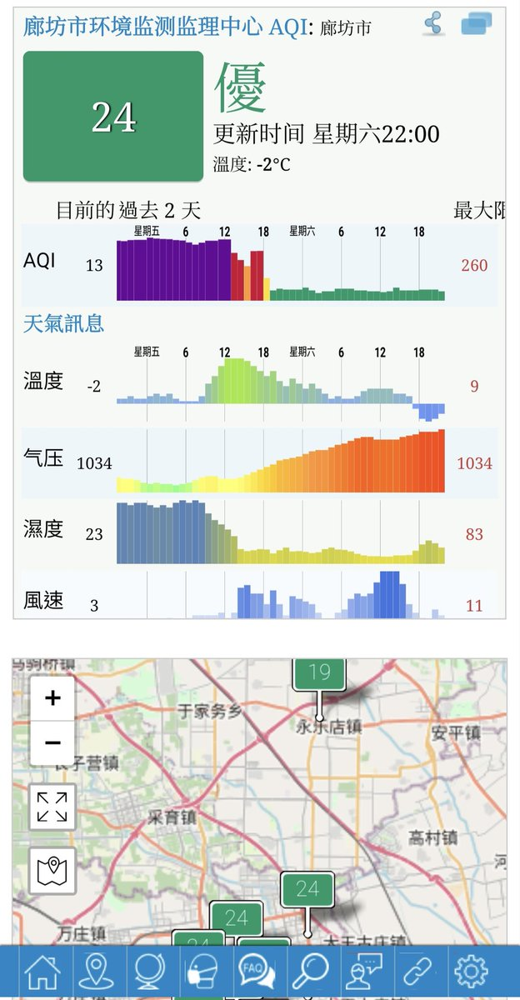
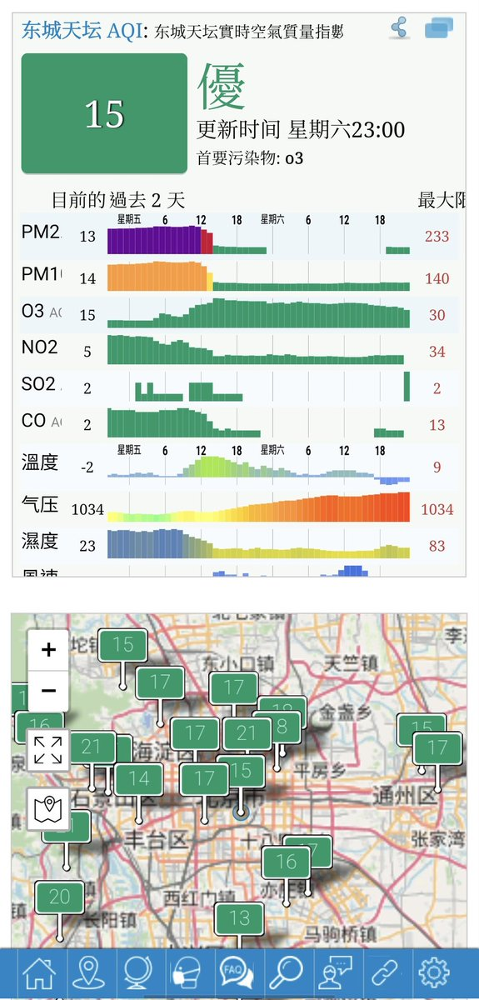
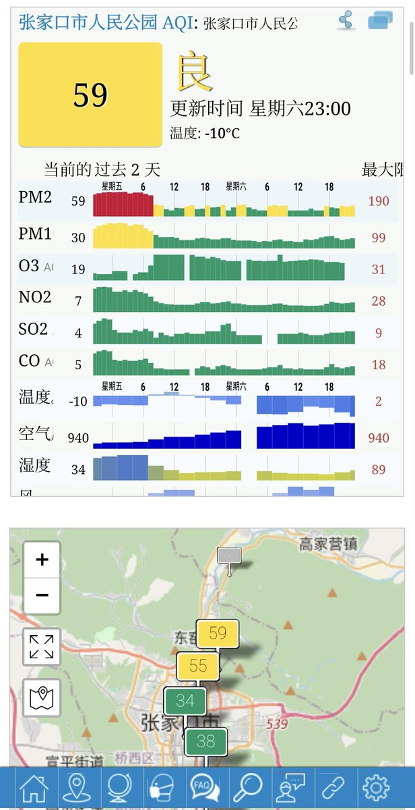
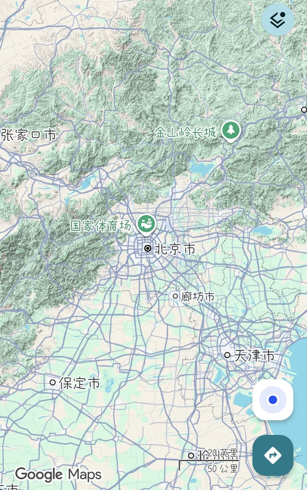

@ForeverYuuka 刮西北风廊坊的aqi应该呈现一个北京转好的同时廊坊aqi迅速恶化，然后在数小时内好转至接近同一水平。不过在意空气这波不知道是数据来源方动了啥手脚，提前一天就把空气质量改到空气好转后的数据了。





我上一个动态发错图了，正确的图应该是这样，廊坊空气质量改善和北京是同步的，只是冷空气将雾霾又吹到廊坊导致AQI再次上升。再加一个张家口作为对照，张家口空气质量改善比北京早多了，之所以北京空气质量更早转好，是因为官厅水库附近的山有缺口导致冷空气渗漏，下面的图可以体现 https://t.co/Cdr9X1FVYK https://t.co/9C11BbnqOp